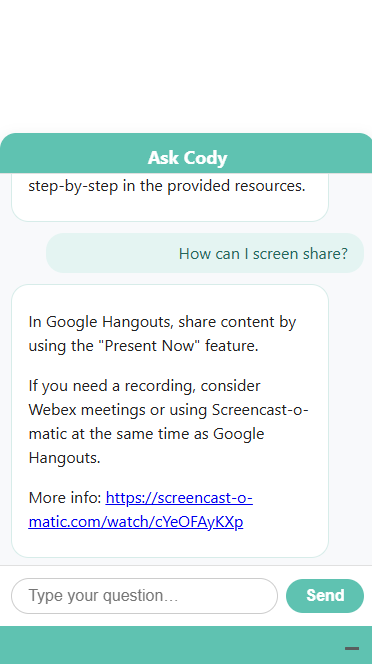

CTLA Chatbot
Mobile Screenshot

Description
I developed a chat bot for my work leveraging custom embedding generation through fetched and structured proprietary data. The chat bot can answer any question for faculty; questions that cannot be easily answered by general AI services like ChatGPT. Custom embeddings allow for efficient lookup leveraging a RAG system. Responses are optimized by using embedding-efficient structures and a dedicated python server. All aspects-- back-end python, front-end design, JavaScript logic-- were done by me.